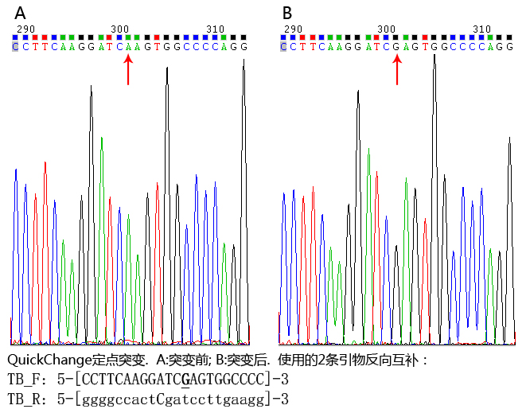

QuickChange使用的引物： TBR: 5-[ggggccactCgatccttgaagg]-3（P第一段片段的引物是反向互补的） TBF: 5-[CCTTCAAGGATCGAGTGGCCCC]-3（P第二段片段的引物是正向的，二者碱基组成相同） 图例 pEGFP-N1多克隆位点：GCTAGCGCTACCGGACTCAGATCTCGAGCTCAAGCTTCGAATTCTGCAGTCGACGGTACCGCGGGCCCGGGATCCACCGGTCGCCACC EGFP:atggtg [多克隆位点：GCTAGCGCTACCGGACTCAGATCTCGAG]之后是atg 结论 (1)5个克隆中，起始密码子之后到EGFP之前序列相同。 (2)红色区域和突变引物一致。可以认为突变成功。  详情 >pTGT-tb1-PEGFP-N-5_H02.ab1 NNANNGNTTNNGACGTCAGATCGCTAGCGCTACCGGACTCAGATCTCGAGATGCGCTGGTGTCTCCTCCTGATCTGGGCCCAGGGGCTGAGGCAGGCTCCCCTCGCCTCAGGAATGATGACAGGCACAATAGAAACAACGGGGAACATTTCTGCAGAGAAAGGTGGCTCTATCATCTTACAATGTCACCTCTCCTCCACCACGGCACAAGTGACCCAGGTCAACTGGGAGCAGCAGGACCAGCTTCTGGCCATTTGTAATGCTGACTTGGGGTGGCACATCTCCCCATCCTTCAAGGATCGAGTGGCCCCAGGTCCCGGCCTGGGCCTCACCCTCCAGTCGCTGACCGTGAACGATACAGGGGAGTACTTCTGCATCTATCACACCTACCCTGATGGGACGTACACTGGGAGAATCTTCCTGGAGGTCCTAGAAAGCTCAGTGGCTGAGCACGGTGCCAGGTTCCAGATTCCATTGCTTGGAGCCATGGCCGCGACGCTGGTGGTCATCTGCACAGCAGTCATCGTGGTGGTCGCGTTGACTAGAAAGAAGAAAGCCCTCAGAATCCATTCTGTGGAAGGTGACCTCAGGAGAAAATCAGCTGGACAGGAGGAATGGAGCCCCAGTGCTCCCTCACCCCCAGGAAGCTGTGTCCAGGCAGAAGCTGCACCTGCTGGGCTCTGTGGAGAGCAGCGGGGAGAGGACTGTGCCGAGCTGCATGACTACTTCAATGTCCTGAGTTACAGAAGCCTGGGTAACTGCAGCTTCTTCACAGAGACTGGTGTCGACGGTACCGCGGGCCCGGGATCCACCGGTCGCCACCatggtgAGCAAGGGCGAGGAGCTGTTCACCGGGGTGGTGCCCATCCTGGTCGAGCTGGACGGCGACGTAAACGGCCACAAGTTCAGCGTGTCCGGCGAGGGCGAGGGCGATGCCACCTACGGCAAGCTGACCCTGAAGTTCATCTGCACCACCGGCAAGCTGCCCGTGCCCTGGNCCACCCTCGTGACCACCCTGACCTACGGCGTGCAGTGCTTCAGCGCTACCCCGACCACATGAAGCAGCACGACTTCTTCAGTCCGCCATGCCGAAGGCTACGTCCAGGAGCGCANCAATCTTTCTTNAA >pTGT-tb2-PEGFP-N-5_A03.ab1 ANNGTNGNNTTNGACGTCAGATCCGCTAGCGCTACCGGACTCAGATCTCGAGATGCGCTGGTGTCTCCTCCTGATCTGGGCCCAGGGGCTGAGGCAGGCTCCCCTCGCCTCAGGAATGATGACAGGCACAATAGAAACAACGGGGAACATTTCTGCAGAGAAAGGTGGCTCTATCATCTTACAATGTCACCTCTCCTCCACCACGGCACAAGTGACCCAGGTCAACTGGGAGCAGCAGGACCAGCTTCTGGCCATTTGTAATGCTGACTTGGGGTGGCACATCTCCCCATCCTTCAAGGATCGAGTGGCCCCAGGTCCCGGCCTGGGCCTCACCCTCCAGTCGCTGACCGTGAACGATACAGGGGAGTACTTCTGCATCTATCACACCTACCCTGATGGGACGTACACTGGGAGAATCTTCCTGGAGGTCCTAGAAAGCTCAGTGGCTGAGCACGGTGCCAGGTTCCAGATTCCATTGCTTGGAGCCATGGCCGCGACGCTGGTGGTCATCTGCACAGCAGTCATCGTGGTGGTCGCGTTGACTAGAAAGAAGAAAGCCCTCAGAATCCATTCTGTGGAAGGTGACCTCAGGAGAAAATCAGCTGGACAGGAGGAATGGAGCCCCAGTGCTCCCTCACCCCCAGGAAGCTGTGTCCAGGCAGAAGCTGCACCTGCTGGGCTCTGTGGAGAGCAGCGGGGAGAGGACTGTGCCGAGCTGCATGACTACTTCAATGTCCTGAGTTACAGAAGCCTGGGTAACTGCAGCTTCTTCACAGAGACTGGTGTCGACGGTACCGCGGGCCCGGGATCCACCGGTCGCCACCatggtgAGCAAGGGCGAGGAGCTGTTCACCGGGGTGGTGCCCATCCTGGTCGAGCTGGACGGCGACGTAAACGGCCACAAGTTCAGCGTGTCCGGCGAGGGCGAGGGCGATGCCACCTACGGCAAGCTGACCCTGAAGTTCATCTGCACCACCGGCAAGCTGCCCGTGCCCTGGCCCACCTCGTGACCACCCTGACCTACGGCGTGCAGTGCTTCAGCCGCTACCCCGACCACATGAGCAGCACGACTTCTTCAGTCGNATGCCCGAGCTACGTCCAGGANCGCCACATCTTNNCCAGGACGACGGCACTACAGACCGCGNGAGGTGAGTCGAGGGGCGANCCCNNNNGANNCATCNANCTGAAGGCATCGAAC >pTGT-tb3-PEGFP-N-5_B03.ab1 CNNNNNGGTNNGACGTCAGATCGCTAGCGCTACCGGACTCAGATCTCGAGATGCGCTGGTGTCTCCTCCTGATCTGGGCCCAGGGGCTGAGGCAGGCTCCCCTCGCCTCAGGAATGATGACAGGCACAATAGAAACAACGGGGAACATTTCTGCAGAGAAAGGTGGCTCTATCATCTTACAATGTCACCTCTCCTCCACCACGGCACAAGTGACCCAGGTCAACTGGGAGCAGCAGGACCAGCTTCTGGCCATTTGTAATGCTGACTTGGGGTGGCACATCTCCCCATCCTTCAAGGATCGAGTGGCCCCAGGTCCCGGCCTGGGCCTCACCCTCCAGTCGCTGACCGTGAACGATACAGGGGAGTACTTCTGCATCTATCACACCTACCCTGATGGGACGTACACTGGGAGAATCTTCCTGGAGGTCCTAGAAAGCTCAGTGGCTGAGCACGGTGCCAGGTTCCAGATTCCATTGCTTGGAGCCATGGCCGCGACGCTGGTGGTCATCTGCACAGCAGTCATCGTGGTGGTCGCGTTGACTAGAAAGAAGAAAGCCCTCAGAATCCATTCTGTGGAAGGTGACCTCAGGAGAAAATCAGCTGGACAGGAGGAATGGAGCCCCAGTGCTCCCTCACCCCCAGGAAGCTGTGTCCAGGCAGAAGCTGCACCTGCTGGGCTCTGTGGAGAGCAGCGGGGAGAGGACTGTGCCGAGCTGCATGACTACTTCAATGTCCTGAGTTACAGAAGCCTGGGTAACTGCAGCTTCTTCACAGAGACTGGTGTCGACGGTACCGCGGGCCCGGGATCCACCGGTCGCCACCatggtgAGCAAGGGCGAGGAGCTGTTCACCGGGGTGGTGCCCATCCTGGTCGAGCTGGACGGCGACGTAAACGGCCACAAGTTCAGCGTGTCCGGCGAGGGCGAGGGCGATGCCACCTACGGCAAGCTGACCCTGAAGTTCATCTGCACCACCGGCAAGCTGCCCGTGCCCTGGCCCACCCTCGTGACCACCCTGACCTACGGCGTGCAGTGCTTCAGCCGCTACCCCGACCACATGAAGCAGCACGACTTCTTCAAGTCGNATGCCCGAGCTACGTCAGGAGCGCCACCATCNNNCAGACGACGCNCTACAGACCCGCGNCGAGGTGAGNTCGAGGGCGACNCCTNNNACGCATCGAGCCTNANGGNATTCGACCTTCAAGGGAGGGACGGCNNNN >pTGT-tb4-PEGFP-N-5_C03.ab1 CNNGTNNCNNNGACGTCAGATCGCTAGCGCTACCGGACTCAGATCTCGAGATGCGCTGGTGTCTCCTCCTGATCTGGGCCCAGGGGCTGAGGCAGGCTCCCCTCGCCTCAGGAATGATGACAGGCACAATAGAAACAACGGGGAACATTTCTGCAGAGAAAGGTGGCTCTATCATCTTACAATGTCACCTCTCCTCCACCACGGCACAAGTGACCCAGGTCAACTGGGAGCAGCAGGACCAGCTTCTGGCCATTTGTAATGCTGACTTGGGGTGGCACATCTCCCCATCCTTCAAGGATCGAGTGGCCCCAGGTCCCGGCCTGGGCCTCACCCTCCAGTCGCTGACCGTGAACGATACAGGGGAGTACTTCTGCATCTATCACACCTACCCTGATGGGACGTACACTGGGAGAATCTTCCTGGAGGTCCTAGAAAGCTCAGTGGCTGAGCACGGTGCCAGGTTCCAGATTCCATTGCTTGGAGCCATGGCCGCGACGCTGGTGGTCATCTGCACAGCAGTCATCGTGGTGGTCGCGTTGACTAGAAAGAAGAAAGCCCTCAGAATCCATTCTGTGGAAGGTGACCTCAGGAGAAAATCAGCTGGACAGGAGGAATGGAGCCCCAGTGCTCCCTCACCCCCAGGAAGCTGTGTCCAGGCAGAAGCTGCACCTGCTGGGCTCTGTGGAGAGCAGCGGGGAGAGGACTGTGCCGAGCTGCATGACTACTTCAATGTCCTGAGTTACAGAAGCCTGGGTAACTGCAGCTTCTTCACAGAGACTGGTGTCGACGGTACCGCGGGCCCGGGATCCACCGGTCGCCACCatggtgAGCAAGGGCGAGGAGCTGTTCACCGGGGTGGTGCCCATCCTGGTCGAGCTGGACGGCGACGTAACGGCCACAAGTTCAGCGTGTCCGGCGAGGGCGAGGGCGATGCCACCTACGGCAAGCTGACCCTGAAGTTCATCTGCACCACCGGCAAGCTGCCCGTGCCCTGGCCCACCTTCGTGACCACCCTGACCTACGNGTGCAGTGCTTCAGCCGCTACCCCGACCACATGAGCAGCACGACTTCTTCAAGTCGCATGCCCGANGCTACGTCCAGGAGCGCCACCATCTTCTTCAGACGANGCACTACAGACCCGCNCNAGGTGAGTTCGAGGGGCNANNCCTGGNNACGCATCGAGCCTGAAAGGCATTCGACTTCCANNNN >pTGT-tb5-PEGFP-N-5_D03.ab1 CNANGNNNTANGACGTCAGATCCGCTAGCGCTACCGGACTCAGATCTCGAGATGCGCTGGTGTCTCCTCCTGATCTGGGCCCAGGGGCTGAGGCAGGCTCCCCTCGCCTCAGGAATGATGACAGGCACAATAGAAACAACGGGGAACATTTCTGCAGAGAAAGGTGGCTCTATCATCTTACAATGTCACCTCTCCTCCACCACGGCACAAGTGACCCAGGTCAACTGGGAGCAGCAGGACCAGCTTCTGGCCATTTGTAATGCTGACTTGGGGTGGCACATCTCCCCATCCTTCAAGGATCGAGTGGCCCCAGGTCCCGGCCTGGGCCTCACCCTCCAGTCGCTGACCGTGAACGATACAGGGGAGTACTTCTGCATCTATCACACCTACCCTGATGGGACGTACACTGGGAGAATCTTCCTGGAGGTCCTAGAAAGCTCAGTGGCTGAGCACGGTGCCAGGTTCCAGATTCCATTGCTTGGAGCCATGGCCGCGACGCTGGTGGTCATCTGCACAGCAGTCATCGTGGTGGTCGCGTTGACTAGAAAGAAGAAAGCCCTCAGAATCCATTCTGTGGAAGGTGACCTCAGGAGAAAATCAGCTGGACAGGAGGAATGGAGCCCCAGTGCTCCCTCACCCCCAGGAAGCTGTGTCCAGGCAGAAGCTGCACCTGCTGGGCTCTGTGGAGAGCAGCGGGGAGAGGACTGTGCCGAGCTGCATGACTACTTCAATGTCCTGAGTTACAGAAGCCTGGGTAACTGCAGCTTCTTCACAGAGACTGGTGTCGACGGTACCGCGGGCCCGGGATCCACCGGTCGCCACCatggtgAGCAAGGGCGAGGAGCTGTTCACCGGGGTGGTGCCCATCCTGGTCGAGCTGGACGGCGACGTAAACGGCCACAAGTTCAGCGTGTCCGGCGAGGGCGAGGGCGATGCCACCTACGGCAAGCTGACCCTGAAGTTCATCTGCACCACCGGCAAGCTGCCCGTGCCCTGNNCCACCCTCGTGACCACCCTGACCTACGGCGGTGCAGTGCTTCAGCCGCTACCCGACCACATGAAGCAGCACGACTTCTTCAGTCCGCCATGCCGNNNCTACGTCCAGGAGCGNNCNTCNNNCANNCGACGCACTACAGANTCNNNCCGAGGGTGAAGTTCGAGGGGNGACACCCTTGGNGAACCGGCATCGAGCCTTNNN
Schematic presentations of mutagenesis PCR amplification processes. A) Using the primers designed as recommended in the QuickChange™ protocol. PCR extension fails when primers annealed to newly synthesised "nicked" DNA. B) Using the new primer design to generate single-site mutation, deletion or insertion. C) Using the new primer design to generate double mutations, deletions or insertions. The gray cycles represent the parental plasmid DNA, the cycles of dash lines represent the DNA amplified using the parental DNA as templates while the cycles of gapped dash line are the DNA amplified using the newly-synthesized DNA as templates. Arrows indicate the numbered primers; Triangles indicate the location of the mutations/deletions/insertions; Short bars indicate the "nicks" in the newly-synthesized DNA molecules.
Liu and Naismith BMC Biotechnology 2008 8:91 doi:10.1186/1472-6750-8-91
http://www.biomedcentral.com/1472-6750/8/91